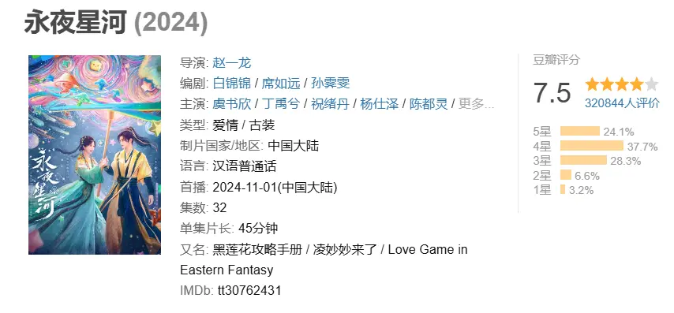

黑莲花攻略手册
本书标签：古代言情，穿书，系统，妖怪
总体评价：作为平日消磨时间的读物，是个不错的选择。
为什么会去看这本书呢？
放假赋闲在家，想不出有什么事做，正经的书看不下去。在某奇艺上，主页推送了这本书的动态漫。几天后找小说看，就想到了这本书。
对“系统”的一些想法
为什么本书需要系统？作者如是说：
我看过几种系统文，要么系统是金手指，要么系统被主角踹开。爽吗？那自然很爽。但客观讲，本文中系统就是游戏规则。在规则之上讲策略，完成两个互相矛盾的任务很难，而且会激发矛盾，正是因为这样不才让人热血沸腾吗！
之前，我对“系统”有些偏见。正如作者所说，一般的“系统”都是为了“爽”而服务的。所以，沾上“系统”，都会被我归结成爽文一类（本书也不例外，但实际上本书不是爽文）。本人不大喜欢爽文，故这些系统文我都看不上一眼😥。在刚发现本书有系统机制时，我对这本书的印象瞬间大打折扣。
但是，本书中的系统不是用来“爽”的，而是用于让情节更波澜起伏。主角要兼顾两个基本相互矛盾的任务，读起来确实比传统言情刺激些。不然，光看主角团打妖怪和谈恋爱就使本书很平庸。读着读着，对“系统”的反感也逐渐消解了。
好吧，其实“系统”这一东西并不都是缺点。嗯，是我没有用辩证法看待事物。此谓之“矛盾是普遍存在的”（辩证法的基础？），高中政治书诚不我欺！
关于我为什么不乐于找爽文看
前些天为何不找爽文看？因为初中时看到微信的爽文广告，于是点进去看了🤪。那本书叫《赘婿》，作者是吻天的狼。算是典中典的爽文了。这本书让我对爽文留下很不好的印象🤯。
感觉多数爽文都把我当煞笔看。从《赘婿》出发，以下列出了一些爽文存在的问题。
首先是反派的离谱行为。爽文的反派一般不喜欢给自己留下一点回旋余地，直接对主角贴脸嘲讽。最具代表性的是“三年之期已到，恭迎龙王回归”小广告里的那些反派。反派情商低得像煞笔。
其次是最离谱的倒贴动机。多数爽文，男主会开后宫。其中女角色的倒贴的行为动机就很容易我拉一坨大的。由于要开后宫，加上篇幅限制，女角色们的情感铺垫很容易不到位，给我一种看傻子的感觉。
再次是“神兵天降”的问题。反复运用这种手法确实看着爽，但是违背了对世界的基本认知。从经验主义来看，你我一生中可能都不会遇到一次神兵天降😅。
随便一本非爽文小说的世界观逻辑、人物行为都更符合现实一些。
当然，上述这些对我来说是缺点，但是对别人或许就是优点。在虚拟世界满足我们的幻想就需要上述这些。
去书店逛，发现这本书居然在售，小说、漫画都有。能被书店挂出来卖的，是不是说明这本书还算是小有名气？

在朋友圈看到有人正在看《永夜星河》这部剧，一搜发现，这本书居然影视化了😱。
截止至2024-11-28日的评分如下

好奇之余，去看了第一集，与小说做了一些简单的对比
值得赞扬的点：
- 影视剧补全了镜妖的人物形象
- 女主穿书后，仍爱书中世界的父亲。小说并未提及原因，但是影视剧补全了这一点：女主在真实世界的父亲遭遇车祸丧生，而书中世界的“父亲”与真实世界的父亲外貌一致。
一些缺点：
- 关于镜妖技能的问题：小说里镜妖利用空间扭曲杀人，表述并不清晰；而影视剧里镜妖把人用很多面镜子围起来，不知道杀伤力在哪里。同时，与队友击破镜妖所在镜子相比，小说里女主提示镜妖扭曲了空间更能体现女主的“聪明伶俐”的形象。
总的来说，编剧并未对小说大刀阔斧修改，而是修补了小说存在的bug。我对编剧很是满意。编剧只要略微修改bug就行，我也要去当编剧了🤪